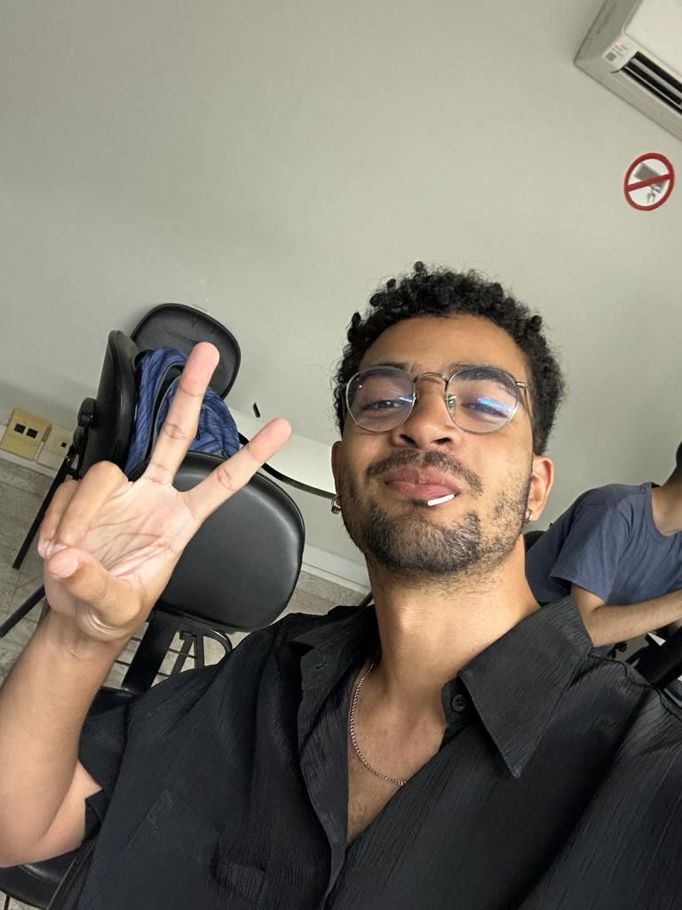

my Playlist é uma forma alternativa de mencionar meu gosto músical.
Spotify
A ideia do my Playlist vem de um inspiração em um aplicativo que mais uso no meu dia a dia que se chama Spotify, eu uso ele desde 2017, todas as minhas playlists de música estão lá.
Playlist
Uma playlist é uma lista de músicas ou vídeos selecionados e organizados de acordo com um tema, gênero, humor ou qualquer critério específico. Geralmente, as playlists são criadas para serem reproduzidas em sequência, fornecendo uma experiência musical ou audiovisual contínua e coesa.
Gêneros Músicais
No my Playlist possui diversos gêneros músicais por que sou uma pessoa bem ecletica desde pequeno, mas irei citar aqui os principais:
Esse aqui é um cara muito bom, e gente boa demais, ele não tem nenhuma música ruim.
Time Line
A time line é uma linha do tempo em relação as mudanças do meu gosto musical (mudanças do my Playlist).
2007-2012
Começo de tudo
Primeiros anos que tive contato com a música, ficava até tarde vendo a mix tv (canal de música) por que eu não tinha internet na época
2013-2015
Época do EDM, Dubstep e Rock
Nessa fase aqui eu comecei a me revoltar e tive minha epoca de roqueiro, mas comecei a passar a ter mais gosto por música eletronica, e dai veio o EDM.
2016-2019
Fim da era roqueiro
Aqui eu comecei a voltar a ouvir de tudo, assim como eu era desde pequeno, do rock até o forro, mas comecei a me interessar mais por hip hop, mesmo escutando desde pequeno por influencia dos meus tios, virou meu gênero favorito só nessa época.
2020-Atualmente
Paixão por house e R&B
De 2020 pra que eu tive mais conexão ainda com a música, amplicando mais ainda meu gosto pra um Soul, Jazz, Reggae. Também tomei mais gosto ainda por house, uma vertente do EDM que eu escutava lá em 2015.
----
Continua
----
Vergil
Meu nick no Spotify, dono do my Playlist

Gabriel Henrique (Vergil)
Autor
Bonito né, me segue ai.
Kendrick Lamar
Deus da Música
Kendrick Lamar é um renomado rapper e compositor americano, nascido em 17 de junho de 1987, em Compton, Califórnia. Ele é reconhecido por suas letras introspectivas, habilidade lírica e narrativas complexas, além de sua influência no hip-hop contemporâneo. Kendrick Lamar começou sua carreira musical lançando várias mixtapes independentes antes de ganhar destaque com seu álbum de estúdio "good kid, m.A.A.d city", lançado em 2012.
Melhor Álbum:
Good kid Maad city
Gênero:
Hip-Hop
Tyler, the Creator
Rapper
Tyler Gregory Okonma (Los Angeles, 6 de março de 1991), mais conhecido pelo seu nome artístico Tyler, The Creator, é um rapper, compositor, produtor musical, diretor e produtor de videoclipes, empresário e designer de modaNascido em Ladera Heights, ele ganhou destaque como o líder e co-fundador do coletivo de hip hop alternativo Odd Future, tendo produzido músicas para quase todos do grupo. Tyler cria toda a arte para os lançamentos do grupo e disse em uma entrevista com o apresentador de rádio DJ Semtex, que projeta toda a roupa do grupo e outras mercadorias também. Como artista solo, Tyler lançou uma mixtape e cinco álbuns de estúdio, muitas vezes responsável por quase ou toda a produção dos mesmos.
Melhor Álbum:
Igor
Gênero:
Hip Hop Alternativo
Bringme The Horizon
Banda.
Bring Me the Horizon (abreviado para BMTH) é uma banda britânica de rock, formada em 2004 em Sheffield, South Yorkshire. O grupo é composto atualmente pelo vocalista Oliver Sykes, o guitarrista Lee Malia, o baixista Matt Kean, o baterista Matt Nicholls e o tecladista Jordan Fish. Eles assinaram contrato com a RCA Records globalmente e com a Columbia Records exclusivamente nos Estados Unidos.
Melhor Álbum:
Sempiternal e Thats the Spirit
Gênero:
Metal e Pop Rock
Kaytranada
Dj.
Louis Kevin Celestin (Porto Príncipe, 25 de agosto de 1992), conhecido profissionalmente como Kaytranada, é um DJ e produtor musical haitiano-canadense. Pouco tempo depois, a família do músico, se mudou para Montreal, no Canadá, onde criou o garoto no meio de discos do Pink Floyd e de Bob Marley, não muito conhecido , mas faz músicas com varios artistas conhecidos como The Weeknd, Pharell Willims e SZA.
Melhor Álbum:
BUBBA
Gênero:
Eletronica e Hip-Hop
Kanye West
Maluco da cabeça
Ye (; nascido Kanye Omari West; Atlanta, 8 de junho de 1977), mais conhecido, anteriormente, como Kanye West, é um rapper, compositor, produtor musical, diretor de arte e estilista americano. West ficou famoso no início de sua carreira como produtor da Roc-A-Fella Records, onde ganhou reconhecimento pelo seu trabalho no álbum The Blueprint, de Jay-Z, assim como por hits para outros cantores como Alicia Keys, Ludacris, Janet Jackson e outros. Atualmente, como cantor, West é o 9º artista que mais vendeu músicas em formato digital, além de ter ganhado vários prêmios, incluindo um total de 22 Grammys, sendo assim o maior rapper da história da premiação. Seu estilo de produção originalmente consistia de samples vocais agudos de músicas soul incorporados à sua própria percussão e instrumentos. Contudo, em produções subsequentes, ele aumentou sua paleta musical e expressou influências que abarcam R&B dos anos 70, baroque pop, trip hop, arena rock, folk, música alternativa, música eletrônica, synthpop e música clássica.!
Melhor Álbum:
Graduation e Donda
Gênero:
Tudo, no geral hip hop
Post Malone
Diogo Defante.
Austin Richard Post (Syracuse, 4 de julho de 1995), conhecido profissionalmente como Post Malone, é um artista, rapper, cantor, compositor, empresário, produtor musical e ator norte-americano. Conhecido por suas tatuagens, composições introspectivas e estilo vocal lacônico, Malone ganhou aclamação por misturar uma variedade de gêneros, incluindo hip hop, R&B, pop, trap, rap rock e cloud rap. Ele obteve reconhecimento pela primeira vez em 2015, após o lançamento de seu single de estreia "White Iverson". Subsequentemente, assinou um contrato com a Republic Records. O seu nome artístico é derivado do seu apelido e de um gerador de nomes de rap.